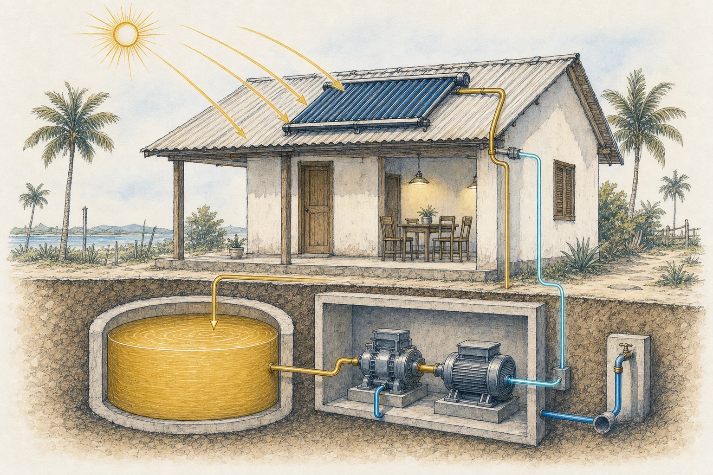

Solar thermal
Store heat collected during the day for use beyond daylight hours.
Low-temperature thermal power
The Expansion Engine is an experimental system designed to convert low-temperature thermal energy into mechanical and electrical power.
Conceived and led by physicist Victor de Amorim d’Ávila,
with collaboration from oceanographer Uggo Pinho.
The challenge
Renewable energy is abundant, but often intermittent. Conventional storage can be expensive, resource-intensive, and difficult to scale for every community.
The Expansion Engine explores a different path: storing energy as heat in water, then using a controlled temperature difference to produce motion when power is needed.
How it works
Low-temperature heat may be collected from solar, geothermal, or marine sources.
Insulated water reservoirs hold thermal energy using a familiar, widely available medium.
Alternating thermal conditions drive controlled expansion and contraction inside the engine.
The resulting mechanical motion can be coupled to a generator to produce electricity.
Conceptual overview. Detailed engineering remains proprietary.
Why water?
Water has a high specific heat capacity: it can absorb and retain substantial thermal energy. That makes it an intriguing medium for low-temperature storage systems designed around durability, accessibility, and scale.
From sunlight to household power

Roof-mounted thermal collectors charge an insulated hot-water cistern. A separate cold-water supply provides the temperature difference needed by the engine, while a coupled generator returns electrical power to the home.
Potential applications
Store heat collected during the day for use beyond daylight hours.
Explore naturally occurring low-grade heat as a continuous energy source.
Investigate the temperature difference between surface and deeper waters.
Support research into decentralized and off-grid energy generation.
Development status
The Expansion Engine is an independent research and engineering project. Prototype development, testing, and refinement are ongoing.
Meet the team
Physicist and the driving mind behind the Expansion Engine. Victor conceived the core thermodynamic and mechanical approach and leads its continuing development.
Oceanographer supporting the project through research, collaboration, communication, and the effort to connect the engine with people who can help it grow.
Open to collaboration
We welcome conversations with engineers, researchers, energy specialists, and organizations interested in low-temperature thermal power.
Connect on GitHub